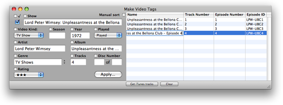
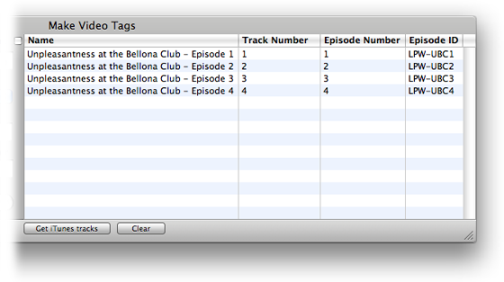
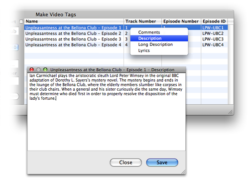

Using Make Video Tags
Step 4: Entering Specific Track Tag Information
The right side of the main window is where you can enter information for each specific track which includes Name, Track Number, Episode Number and Episode ID.
To enter information, double-click the appropriate cell and begin entering text.

The Track Number and Episode Number cells can only accept numbers. To effectively "blank" the data, enter a zero.
Auto Numbering
You can set the Track Number, Episode Number or Episode ID of all the tracks automatically by clicking "Auto Number Tracks...", "Auto Number Episodes..." or "Auto Number Episode IDs..." in the File menu. This will display the Auto Number window. Numbering will begin with the number you enter in the Auto Number window and will begin with the first track (the topmost track row) in the list. The number will be incremented for each track in the current sorted order.
Episode IDs
Technically, the Episode ID can contain alphanumeric text but does not necessarily have to contain a number (Track Number and Episode Number tags must be a number and alphabetic characters cannot be entered.) However, since Episode Number cannot be displayed as a column in iTunes you might find it convenient to automatically number the Episode ID tags which can be displayed.
If you choose this option note that the number used will be appended to any current text in the Episode ID tag. (Notice how I have done so in the Episode ID column below.) If there is no current text then the number will appear by itself.

Comments, Description, Long Description and Lyrics
You can access these larger text fields to either view or edit by:
Selecting the track and then choosing Comments, Description, Long Description or Lyrics in the Tags menu.
OR
Control-clicking or right-clicking on a track to bring up a contextual-menu. Choose which field you wish to view or edit:

Description can be displayed in its own column in an iTunes playlist. It is usually a brief summary of the video's content.
Long Description is what appears in a separate window when you click the gray "i" button in a track's Description column in iTunes. It is usually a longer description of the video's content.
Click the "Save" button to record any changes or the "Close" button to exit the window without saving. (No information will saved to the selected tracks in iTunes until you click the "Apply..." button.)
<- 3. Entering Global Tag Information | 5. Applying the Information ->